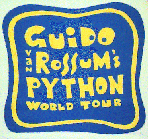

Original 20-Nov-1994, last mod 24-Nov-1994.

Starting with my list of prospective topics, the group concentrated on identifying suitable topics, and came up with the following:
We also paid some brief attention to:
(We saw the remaining items either as being implementable more suitably as language extrinsics, or else, as programmer interfaces, sufficiently large and amorphous enough to best be considered another time.)
As a preview, the code in custom.py exhibits many of the prospective features discussed in the meeting.
I hope that the resulting proposals offer significant advances on the respective python features, and are suitable for inclusion in the language. Further comments and suggestions are emphatically welcomed - in particular, note the uncertain items bracketed by doubled '??' question marks. Please feel free to send email directly to me, and/or the python lists.
Ken Manheimer 301 975-3539 ken.manheimer@nist.gov FAX: 301 963-9137 Network Engineering Group, Computer Systems and Communications Division, National Institute of Standards and Technology Technology A151 Gaithersburg, MD 20899